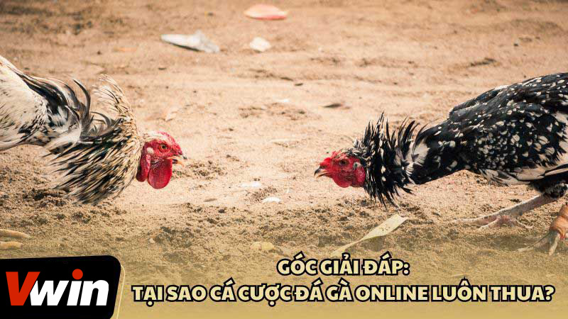
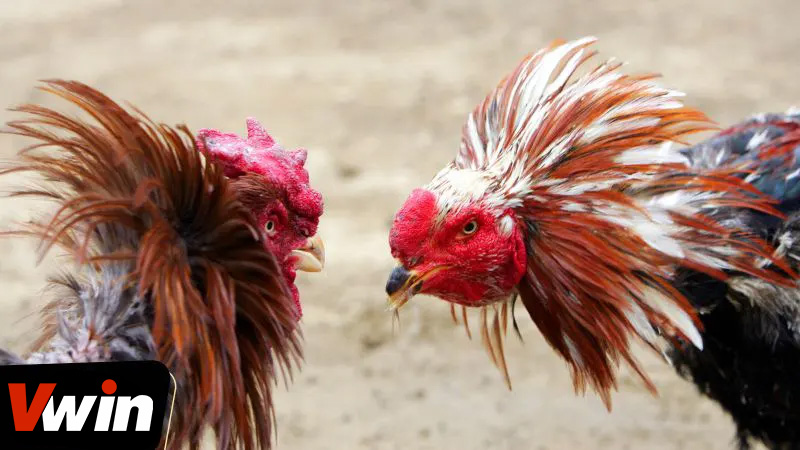
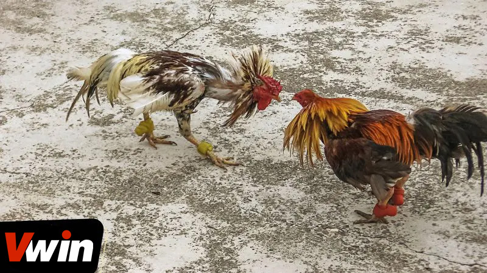
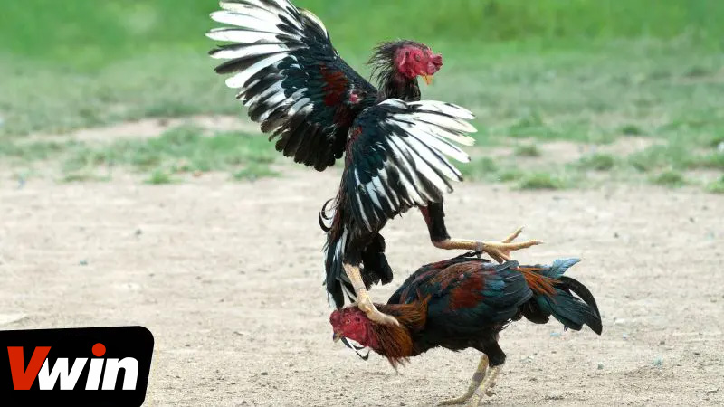

.png)
ĐÃ ĐĂNG TRÊN TRÊN THÁNG BA 4, 2024 BỞI Vwin
Nhiều người chơi thường gặp phải vấn đề không đạt được kết quả như mong đợi khi tham gia cá cược đá gà trực tuyến. Nếu bạn đang tự hỏi lý do vì sao lại thường xuyên thua cuộc khi đặt cược trên mạng, bài viết này sẽ là nguồn thông tin không thể bỏ qua. Chúng tôi sẽ cung cấp một cái nhìn chi tiết về các nguyên nhân cá cược đá gà online dẫn đến thất bại và đề xuất các giải pháp hiệu quả nhằm nâng cao tỷ lệ thắng trong các phiên cá cược của bạn.
Nếu bạn thường xuyên tham gia cá cược đá gà trực tuyến nhưng lại liên tục gặp phải thất bại, có thể bạn đang tự hỏi, “Tại sao tôi luôn thua khi đá gà trên mạng?” Đây là một câu hỏi phổ biến mà nhiều người chơi đặt ra khi họ không đạt được kết quả như mong đợi. Dưới đây, chúng ta sẽ khám phá một số nguyên nhân chính có thể ảnh hưởng đến kết quả cá cược của bạn và cung cấp cái nhìn sâu sắc vào cách bạn có thể cải thiện tỷ lệ thắng của mình.
Một trong những nguyên nhân chính mà người chơi cá cược đá gà online thường gặp phải là sự phụ thuộc nặng nề vào yếu tố may mắn. Đôi khi, người chơi có thể thắng lớn mà không cần phải phân tích hay suy nghĩ nhiều, nhưng khi dành thời gian phân tích kỹ lưỡng lại kết thúc với kết quả không như mong đợi. Điều này cho thấy, nếu bạn đang trải qua một giai đoạn không may mắn, khả năng thua cuộc trong cá cược trở nên cao hơn.
Một yếu tố khác góp phần vào việc thường xuyên thua cuộc trong cá cược đá gà online là tâm lý không ổn định sau thất bại. Khi người chơi để thua một trận, cảm xúc tiêu cực như bức tức hoặc nóng giận có thể làm ảnh hưởng đến quyết định đặt cược của họ trong những trận đấu tiếp theo. Điều này thường dẫn đến việc tiếp tục thua lỗ, khi người chơi không còn giữ được sự bình tĩnh và phán đoán một cách khách quan.
Tại sao đá gà trên mạng luôn thua?
Một nguyên nhân khác dẫn đến việc thường xuyên thua cuộc trong cá cược đá gà trực tuyến là việc lựa chọn nhà cái. Các cao thủ trong lĩnh vực cá độ luôn ưu tiên chọn những nhà cái uy tín để tham gia, bởi việc đặt cược tại các nhà cái không uy tín thường đi kèm với rủi ro cao.
Những nhà cái này có thể thay đổi kết quả một cách bất ngờ hoặc cung cấp dịch vụ truyền hình trực tiếp kém chất lượng, làm giảm đáng kể khả năng chiến thắng của người chơi. Do đó, việc chọn một nhà cái uy tín không chỉ giúp tăng cơ hội thắng mà còn đảm bảo trải nghiệm cá cược đá gà online mượt mà và công bằng.
Một lý do quan trọng khác khiến nhiều người chơi thường xuyên thua cược khi đặt cược đá gà trực tuyến là thiếu kinh nghiệm. Điều này bao gồm không biết cách lựa chọn gà chiến tiềm năng hay không hiểu rõ cách đọc và phân tích kèo cược cho mỗi trận đấu. Sự thiếu hụt này dẫn đến việc đưa ra những quyết định cá cược không chính xác, từ đó làm tăng khả năng thua cược.
Quản lý vốn kém là một trong những nguyên nhân chính dẫn đến thất bại trong cá cược đá gà online. Điều này xảy ra khi người chơi không áp dụng một chiến lược phân bổ vốn hợp lý và quyết định đặt toàn bộ số tiền của mình vào một lần cược. Hành động này mang lại rủi ro cao vì một khi thua, người chơi sẽ mất hết vốn và không còn cơ hội để phục hồi tài chính trong các ván cược tiếp theo.
Nguyên nhân cá cược đá gà online dẫn đến thất bại
Trong bối cảnh cá độ đá gà online, việc thua cược là điều không ai mong muốn. Dưới đây là một số kinh nghiệm và mẹo vặt được chia sẻ để giúp người chơi tăng cơ hội chiến thắng:
Áp dụng những nguyên tắc này không chỉ giúp tăng tỷ lệ thắng mà còn giúp người chơi có trải nghiệm cá cược đá gà trực tuyến lành mạnh và bền vững.
Bí quyết chiến thắng khi chơi cá cược đá gà online từ cao thủ
Qua bài viết này, chúng tôi đã giải đáp các thắc mắc về nguyên nhân thường xuyên thua khi chơi cá cược đá gà online và cung cấp những bí quyết quý giá để giúp bạn cải thiện tỷ lệ thắng. Hy vọng thông tin được chia sẻ sẽ hỗ trợ bạn trong việc đưa ra quyết định chính xác hơn và tận hưởng thành công khi tham gia cá cược đá gà online tại sảnh game Đá gà Vwin.
Vwin được công nhận là nhà cái cá cược hợp pháp - an toàn. Vwin còn có trụ sở chính và cá cược trực tiếp tại Phú Quốc.